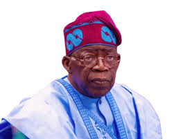
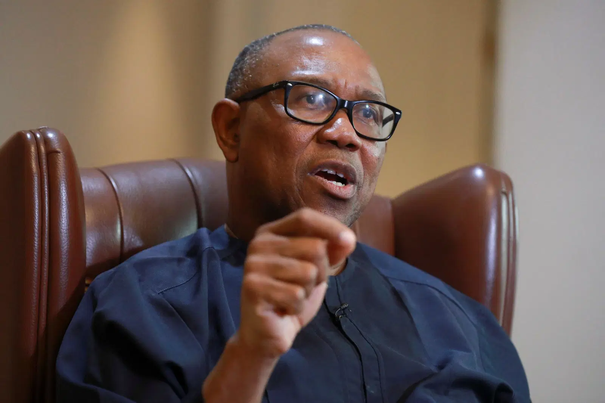
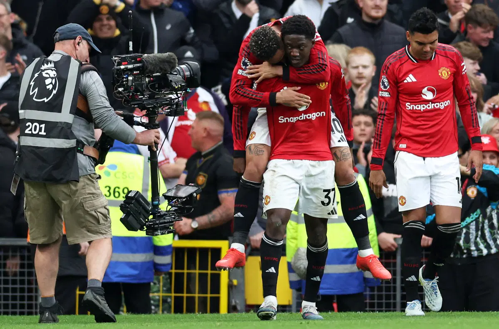

Breaking News

Nigeria records major growth in the economy this year as new policies improve trade and investment. Experts say this could lead to more job opportunities.The governor stated this on Tuesday while delivering a lecture during the sixth Biennial Adada Lecture Series at the University of Nigeria, Nsukka. The event was organised by the Association of Nsukka Professors.In his lecture titled, Our Future in Our Past: Intellectualism and the Making of African Renaissance, the governor questioned why academic discussions have seemingly lost their authority in national life.
Politics

Former presidential candidate, Peter Obi, has confirmed his exit from the African Democratic Congress, citing deepening internal crises and a hostile political environment. Obi made the disclosure in a personal statement on Sunday, on his X platform, where he reflected on what he described as the “toxic” nature of Nigeria’s political space and the pressures faced by public figures. Government officials meet in Abuja to discuss national development and security.
Sport

Manchester United secured Champions League football next season as Kobbie Mainoo’s strike earned a thrilling 3-2 victory over old rivals Liverpool on sunday. United were 2-0 up inside 15 minutes through Matheus Cunha and Benjamin Sesko, but imploded after the break to allow Arne Slot’s men to level with goals from Dominik Szoboszlai and Cody Gakpo before Mainoo secured the win.